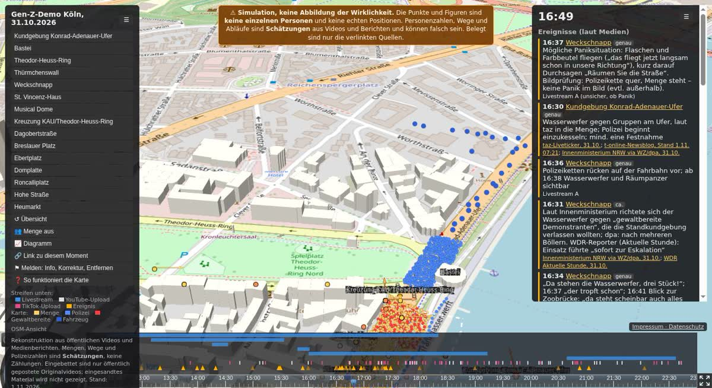

Gen-Z-Demo Köln, 31.10.2026
Der ganze Tag als begehbare 3D-Karte – aus öffentlichen Videos, Livestreams, Medien- und Polizeiberichten.
Simulation: Punkte sind keine echten Personen, Mengen und Wege sind geschätzt. Belegt ist, was verlinkt ist.

Was die Karte zeigt
EreignisseWas wann wo passiert ist, laut Medien und Polizei – jeweils mit Quelle und Datum.
Videos am OrtWo eine Aufnahme entstand und wohin die Kamera zeigte. Das Original lädt erst nach einem Klick.
LivestreamsDie Wege von vier Livestreams, Minute für Minute; Stream und Zeitachse laufen gemeinsam.
Menge und PolizeiGeschätzte Zahlen als simulierte Punkte oder als Dichte, die in Videobildern gezählt wurde, und als Verlauf über den Tag.
Wie belastbar ist das?
- Jede Angabe aus Medien oder von der Polizei ist verlinkt. Vorwürfe stehen nur mit Quelle da und sind als unbestätigt gekennzeichnet.
- Jeder verortete Ort und jede Uhrzeit hat eine Sicherheitsangabe (hoch, mittel, niedrig) mit Begründung.
- Die Mengen sind eine Simulation: Sie verteilen geschätzte Zahlen auf die Flächen, auf denen Videos und Berichte Menschen zeigen. Eine offizielle Gesamtzahl der Polizeikräfte gibt es nicht.
- Alle verwendeten Videos, Berichte und Polizeimeldungen stehen in der Quellenliste, der Ablauf zum Nachlesen im rekonstruierten Liveblog.
- Daten und Methode sind offen: Quellcode und Daten auf GitHub.
Für Presse
- Zitieren und Screenshots gern, mit „Rekonstruktion: Protest-Watch, protest-watch.org; Kartendaten © OpenStreetMap-Mitwirkende“ und dem Hinweis, dass Mengen und Wege geschätzt sind.
- Belegt ist, was in der Karte mit Quelle verlinkt oder aus Videos verortet ist; geschätzt sind Mengen, Polizeistärken und Wege ohne Video-Beleg. Alle Quellen stehen in der Quellenliste.
- Einen bestimmten Moment teilen: in der Karte unter „Mehr“ → „🔗 Link zu diesem Moment“.
- Rückfragen und Korrekturen: protest-watch@pm.me
Mitmachen und Korrekturen
- Videos, Fotos, Beobachtungen – auch anonym: Material einreichen.
- Öffentliche Quellen und Korrekturen mit GitHub-Konto: Issue öffnen. Issues sind öffentlich – nur Links zu schon öffentlichem Material, keine eigenen Dateien mit erkennbaren Personen.
- Fehler, Ergänzungen, Entfernen-Wünsche: in der Karte über „⚑ Melden“ – Uhrzeit und Ort gehen automatisch mit – oder per Mail an protest-watch@pm.me. Ich prüfe innerhalb von 3 Tagen.
Keine Identifizierung, kein Tracking
Die Karte identifiziert niemanden, weder Demonstrierende noch Polizeikräfte. Livestreams erscheinen pseudonym, kleine private Konten ohne Namen, eingesandtes Material wird nicht gezeigt. Die Seite setzt keine Cookies, lädt nichts von fremden Servern, solange du kein Video anklickst, und zählt Besuche nur anonym als Tagessummen.